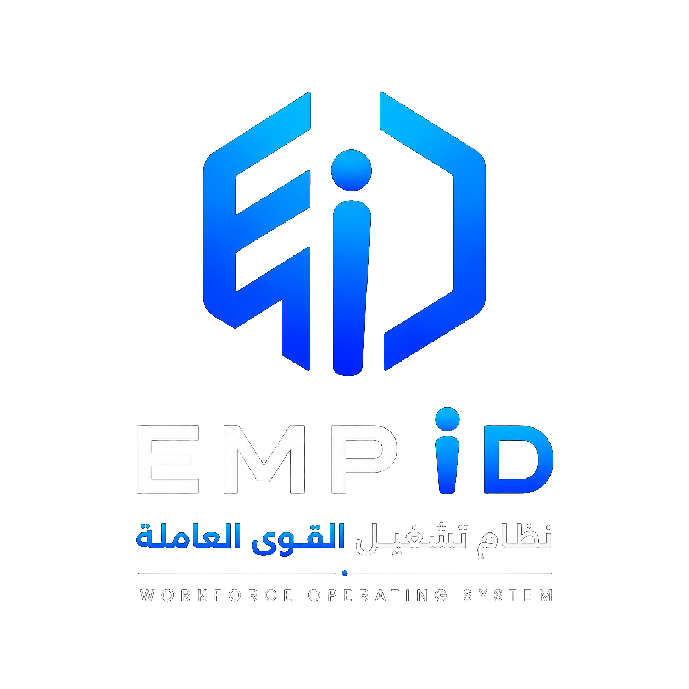

EMPID - نظام تشغيل إدارة القوى العاملة
أوقف إدارة الموظفين عبر Excel وWhatsApp
EMPID يساعد الشركات المتوسطة على إدارة الحضور والإجازات والرواتب وملفات الموظفين والموافقات والتقارير من منصة واحدة آمنة وسهلة الاستخدام.
السعودية
الإمارات
قطر
الكويت
عُمان
اتجاه الحضور
92%
التنبيهات
5
- وثائق تحتاج تجديد
- موافقات رواتب معلقة
- طلبات إجازة جديدة
مصمم للشركات المتوسطة في الخليج والشرق الأوسط
دعم العربية والإنجليزية
مناسب لـ 50-300 موظف
إدارة الفروع والفرق
صلاحيات وأمان متقدم
المشكلة
هل أصبحت إدارة الموارد البشرية أصعب مع نمو فريقك؟
بيانات الموظفين موزعة بين ملفات Excel
طلبات الإجازة تضيع بين WhatsApp والبريد
صعوبة متابعة الحضور والتأخير
أخطاء تظهر عند إعداد الرواتب
ملفات الموظفين والوثائق غير منظمة
الإدارة لا تملك رؤية واضحة لحالة الفريق
الحل
منصة واحدة لإدارة عمليات الموظفين
EMPID ليس مجرد نظام موارد بشرية. EMPID هو نظام تشغيل لإدارة القوى العاملة.
EMPID يجمع العمليات اليومية للموارد البشرية في مكان واحد، من ملف الموظف إلى الحضور والإجازات والرواتب والتقارير، حتى تستطيع الشركة العمل بوضوح وسرعة وبدون فوضى.
القيمة
نتائج واضحة لفريق الموارد البشرية والإدارة
وفر وقت فريق الموارد البشرية
قلل أخطاء الرواتب
تابع الحضور بوضوح
نظم ملفات الموظفين
امنح المديرين رؤية أفضل
أدر الفروع والفرق من مكان واحد
الوحدات
كل ما تحتاجه لإدارة القوى العاملة
إدارة الموظفين
الحضور والانصراف
الإجازات والموافقات
الرواتب
الوثائق والملفات
الأداء والتقييم
الأصول
المصروفات
التقارير والتحليلات
بوابة الخدمة الذاتية
إدارة القوى العاملة
القطاعات
مصمم للشركات التي لديها فرق ميدانية وإدارية
شركات المقاولات
شركات الأمن والحراسة
الخدمات اللوجستية والنقل
العيادات والمراكز الطبية
المدارس الخاصة
شركات الخدمات والتشغيل
شركات التقنية
الأمان
أمان مصمم لبيانات الموظفين الحساسة
بيانات الموظفين والرواتب والوثائق تحتاج حماية قوية. لذلك يعتمد EMPID على صلاحيات دقيقة، سجلات تدقيق، عزل بيانات العملاء، دعم المصادقة الثنائية، وتشفير البيانات الحساسة.
مبني على تقنيات حديثة وبنية سحابية قابلة للتوسع لدعم الأداء العالي والأمان واستمرارية التشغيل.
صلاحيات حسب الدور
سجلات تدقيق
عزل بيانات العملاء
جاهزية المصادقة الثنائية
تشفير البيانات الحساسة
عرض تجريبي
شاهد كيف يمكن لشركة لديها 100 موظف إدارة كل شيء من مكان واحد
في عرض مدته 15 دقيقة، نستعرض كيف يمكن إدارة الحضور والإجازات والرواتب وملفات الموظفين بدون Excel وبدون فوضى.
الأسعار
خطط مرنة حسب حجم الشركة
النمو
للشركات من 50 إلى 100 موظف
اطلب الأسعارالأعمال
للشركات من 101 إلى 300 موظف
اطلب الأسعارالشركات الكبيرة
للشركات الأكبر أو متعددة الفروع
اطلب الأسعاردليل حلول الموارد البشرية HR Software Guide
محتوى تفصيلي يساعد الشركات على اختيار نظام موارد بشرية مناسب In-depth content for choosing the right HR software
تغطي هذه الأقسام أهم كلمات البحث حول نظام إدارة الموظفين، برنامج الحضور والانصراف، إدارة الإجازات، برنامج الرواتب، وإدارة القوى العاملة للشركات المتوسطة في الشرق الأوسط. These sections cover HRMS, employee management software, attendance management, leave management, payroll software, and workforce management for growing Middle East companies.
إدارة الموظفين
الحضور والانصراف
إدارة الإجازات
إدارة الرواتب
نظام موارد بشرية في السعودية
إدارة القوى العاملة
موارد بشرية لشركات المقاولات
إدارة شركات الأمن والحراسة
نظام إدارة الموظفين وبرنامج إدارة الموظفين Employee Management Software
عندما تنمو الشركة من عشرات الموظفين إلى 50 أو 100 أو 300 موظف، تصبح إدارة بيانات الموظفين عبر ملفات Excel والمجلدات والبريد الإلكتروني عبئاً تشغيلياً حقيقياً. نظام إدارة الموظفين في EMPID يساعد الشركات على بناء مصدر واحد للحقيقة لكل بيانات الموظف: المعلومات الشخصية، بيانات الوظيفة، الفرع، القسم، المدير المباشر، العقود، الوثائق، الراتب، حالة الدوام، وأي ملاحظات إدارية مهمة. بدلاً من البحث في أكثر من ملف أو سؤال أكثر من شخص، يستطيع فريق الموارد البشرية والإدارة الوصول إلى ملف الموظف من منصة واحدة منظمة.
هذا النوع من برنامج إدارة الموظفين لا يخدم قسم الموارد البشرية فقط. المديرون يحتاجون رؤية واضحة للفريق، ومسؤولو الرواتب يحتاجون بيانات دقيقة، والموظفون يحتاجون قناة سهلة لطلب الإجازات وتحديث المعلومات واستعراض الوثائق. لذلك يتم وضع إدارة الموظفين داخل نظام موارد بشرية متكامل وليس كقاعدة بيانات منفصلة. عندما يكون ملف الموظف متصلاً بالحضور والانصراف والإجازات والرواتب والموافقات، تقل الأخطاء وتصبح التقارير أكثر موثوقية.
EMPID مناسب للشركات المتوسطة التي تريد نظام شؤون الموظفين باللغة العربية والإنجليزية، مع صلاحيات واضحة لكل دور. يمكن للإدارة تقسيم الموظفين حسب الفروع والمواقع والفرق، وتحديد من يستطيع رؤية البيانات الحساسة، ومن يستطيع اعتماد الطلبات، ومن يستطيع الوصول إلى تقارير الموارد البشرية. هذا مهم للشركات في السعودية والإمارات ودول الخليج، حيث تتداخل الفرق المكتبية والميدانية وتحتاج الإدارة إلى رؤية موحدة دون تعقيد زائد.
إذا كانت شركتك تبحث عن نظام إدارة الموظفين أو برنامج الموارد البشرية الذي يقلل الاعتماد على Excel، فإن EMPID يقدم الأساس التشغيلي لإدارة بيانات الموظفين بطريقة أكثر دقة. الهدف ليس فقط حفظ المعلومات، بل تحويل ملف الموظف إلى مركز عمليات يرتبط بالحضور، الإجازات، الرواتب، الوثائق، الموافقات، والتنبيهات، بحيث تعمل الشركة بوضوح وسرعة وثقة أكبر.
As a company grows from a small team into 50, 100, or 300 employees, employee data becomes harder to manage through spreadsheets, shared folders, and email threads. EMPID works as employee management software that creates one reliable source of truth for every employee profile: personal data, job information, branch, department, manager, contracts, documents, salary details, attendance status, and operational notes. Instead of searching across files or asking multiple people, HR and management can work from one organized platform.
Employee management software should not only serve HR. Managers need visibility into their teams, payroll officers need accurate data, and employees need a simple way to request leave, update information, and access documents. That is why EMPID connects employee records to attendance management, leave management, payroll software, approvals, and reporting. When the employee profile becomes connected to daily operations, mistakes decrease and workforce reports become more reliable.
EMPID is designed for growing companies in Saudi Arabia, UAE, Qatar, Kuwait, Oman, and the wider Middle East that need Arabic and English support with clear permissions. Admins can organize employees by branch, site, team, and role, while controlling who can view sensitive data, approve requests, or access HR reports. This is especially important for companies with both office and field teams.
If your company is evaluating employee management software or an HRMS to replace Excel, EMPID gives you the operational foundation to manage employee data with more accuracy. The goal is not only to store information; it is to turn each employee profile into an operating hub connected to attendance, leave, payroll, documents, approvals, alerts, and analytics.
نظام الحضور والانصراف وبرنامج الحضور والانصراف Attendance Management System
الحضور والانصراف من أكثر العمليات اليومية حساسية في الشركات التي لديها فرق ميدانية ومكتبية. عندما يتم تسجيل الحضور عبر رسائل WhatsApp أو كشوف يدوية أو ملفات Excel، تظهر مشاكل متكررة: تأخير في تحديث البيانات، اختلاف بين سجلات المدير والموارد البشرية، صعوبة حساب التأخير، وضياع تفاصيل الدوام عند نهاية الشهر. نظام الحضور والانصراف في EMPID يهدف إلى تحويل الحضور من عملية يدوية إلى سجل تشغيلي واضح يمكن الاعتماد عليه في المتابعة والتقارير والرواتب.
برنامج الحضور والانصراف الجيد لا يقتصر على تسجيل وقت الدخول والخروج. الشركات تحتاج سياسات دوام مرنة حسب الفرع أو الموقع أو نوع الشفت، وتحتاج رؤية يومية لمن حضر ومن تأخر ومن غاب ومن يعمل في موقع مختلف. عندما ترتبط بيانات الحضور بملف الموظف والإجازات والرواتب، تصبح الإدارة قادرة على فهم الصورة الكاملة بدلاً من التعامل مع أرقام منفصلة. هذا يقلل الأخطاء عند إعداد الرواتب ويمنح المديرين مؤشرات مبكرة حول الالتزام والتغطية التشغيلية.
EMPID مناسب للشركات التي تعمل في المقاولات، الأمن، الخدمات اللوجستية، المدارس، العيادات، وشركات التشغيل؛ وهي قطاعات تحتاج متابعة دقيقة للحضور في مواقع متعددة. يمكن للنظام أن يدعم إدارة الفروع والفرق والصلاحيات، وأن يجعل تقارير الحضور والانصراف متاحة للإدارة بدلاً من انتظار تجميع البيانات يدوياً في نهاية الأسبوع أو الشهر. بالنسبة للشركات المتوسطة، هذا الفرق ينعكس مباشرة على الوقت، الانضباط، ودقة الرواتب.
إذا كنت تبحث عن نظام الحضور والانصراف أو برنامج إدارة الحضور والانصراف لمنطقة الخليج، فإن EMPID يضع الحضور داخل منصة إدارة القوى العاملة وليس كأداة منفصلة. هذا يعني أن الحضور يصبح جزءاً من رحلة الموظف: من الدوام اليومي، إلى الإجازات، إلى الاستقطاعات أو الإضافات، إلى التقارير التي تساعد الإدارة على اتخاذ قرارات أفضل.
Attendance is one of the most sensitive daily workflows for companies with office and field teams. When attendance is recorded through WhatsApp messages, paper sheets, or Excel files, issues appear quickly: delayed updates, conflicting manager records, unclear lateness calculations, and missing timesheet details at month-end. EMPID’s attendance management system turns attendance into a reliable operational record that can support tracking, approvals, reports, and payroll.
Good attendance management software is not only about clock-in and clock-out. Growing companies need flexible attendance policies by branch, site, shift, or team. They need to know who is present, late, absent, on leave, or working from another location. When attendance data connects with employee records, leave management, and payroll software, management sees the full picture instead of disconnected numbers. This helps reduce payroll mistakes and gives managers earlier visibility into coverage and discipline.
EMPID is especially relevant for construction, security, logistics, schools, clinics, and service companies that manage teams across multiple sites. It supports branch and team management, permissions, and reporting so attendance does not remain trapped in individual spreadsheets. For mid-sized companies, reliable attendance tracking directly affects HR workload, payroll accuracy, and operational control.
If you are looking for an Attendance Management System in the Middle East, EMPID places attendance inside a wider Workforce Management System rather than treating it as a standalone tool. Attendance becomes part of the employee journey, from daily time tracking to leave balances, payroll adjustments, approvals, and management reports.
إدارة الإجازات وطلبات الموافقة Leave Management Software
إدارة الإجازات تبدو بسيطة في الشركات الصغيرة، لكنها تصبح معقدة عندما يزيد عدد الموظفين والفروع والمديرين. الطلبات قد تصل عبر WhatsApp أو البريد أو مكالمة مباشرة، ثم يحتاج فريق الموارد البشرية إلى تتبع الرصيد، نوع الإجازة، موافقة المدير، تأثير الغياب على الشفت، وربط الإجازة بالرواتب. بدون نظام واضح، تضيع الطلبات أو تتأخر الموافقات أو تظهر اختلافات في رصيد الموظف. EMPID يساعد الشركات على تنظيم إدارة الإجازات داخل منصة موارد بشرية واحدة.
برنامج إدارة الإجازات الفعال يجب أن يدعم سياسات متعددة، أرصدة إجازات، مسارات موافقة، إشعارات، وسجل واضح لكل طلب. الموظف يحتاج طريقة سهلة لتقديم الطلب، والمدير يحتاج رؤية سريعة لحالة الفريق قبل الموافقة، وفريق الموارد البشرية يحتاج بيانات دقيقة للتقارير والرواتب. عندما تكون الإجازات مرتبطة بالحضور والانصراف وملف الموظف، تصبح القرارات أسرع وأكثر عدلاً، ويقل الاعتماد على المحادثات المتفرقة.
في شركات المقاولات والأمن والمدارس والعيادات، غياب موظف واحد قد يؤثر على التغطية التشغيلية. لذلك تحتاج الإدارة إلى معرفة من سيكون خارج العمل، ومتى، وما إذا كان هناك تعارض مع جدول الفريق. EMPID يوفر إطاراً يساعد على إدارة هذه التفاصيل من مكان واحد، مع دعم العربية والإنجليزية والصلاحيات المناسبة للشركات المتوسطة.
إذا كانت شركتك تبحث عن إدارة الإجازات أو برنامج إدارة الإجازات، فالقيمة الحقيقية ليست فقط في استقبال الطلبات، بل في ربط الإجازات بالعمليات اليومية. EMPID يجعل طلب الإجازة جزءاً من نظام شؤون الموظفين: طلب، موافقة، تحديث رصيد، انعكاس على الحضور، وتأثير واضح على التقارير والرواتب.
Leave management feels simple in small teams, but it becomes complex as employee count, branches, and approval layers grow. Requests may arrive through WhatsApp, email, or direct calls, while HR still needs to track balances, leave types, manager approvals, shift coverage, and payroll impact. Without a clear system, requests get lost, approvals are delayed, and balances become disputed. EMPID organizes leave management inside one HR software platform.
Effective leave management software should support policies, balances, approval workflows, notifications, and a clear history for every request. Employees need an easy way to submit requests, managers need visibility before approval, and HR needs accurate data for reporting and payroll. When leave is connected with attendance, employee records, and payroll, decisions become faster and more consistent.
In construction, security, schools, clinics, and service companies, one absence can affect operational coverage. Management needs to know who will be away, when, and whether the absence conflicts with the team schedule. EMPID gives companies a structured way to manage these details from one place, with Arabic and English support and role-based permissions for mid-sized organizations.
If your company is looking for leave management software, the real value is not only receiving requests. It is connecting leave to daily workforce operations. EMPID turns each leave request into part of the HRMS workflow: request, approval, balance update, attendance impact, and clear reporting for payroll and management.
نظام إدارة الرواتب وبرنامج الرواتب Payroll Software
الرواتب هي النقطة التي تظهر فيها أخطاء العمليات السابقة. إذا كانت بيانات الموظفين غير محدثة، أو الحضور غير دقيق، أو الإجازات غير معتمدة، فإن إعداد الرواتب يصبح عملية مرهقة ومليئة بالمراجعات. نظام إدارة الرواتب في EMPID يركز على تقليل العمل اليدوي قبل نهاية الشهر من خلال ربط الرواتب ببيانات الموظفين والحضور والإجازات والموافقات. الهدف هو مساعدة مسؤول الرواتب على العمل من بيانات موحدة بدلاً من تجميع الأرقام من أكثر من مصدر.
برنامج الرواتب للشركات المتوسطة يجب أن يوفر مسارات مراجعة واعتماد، قسائم رواتب، تقارير، وإمكانية تتبع التغييرات التي أثرت على الراتب. عندما يعرف فريق الموارد البشرية مصدر كل خصم أو إضافة أو تعديل، يصبح التواصل مع الإدارة والموظفين أوضح. كما أن وجود سجل للموافقات يقلل النزاعات ويجعل العملية أكثر شفافية.
في أسواق مثل السعودية والإمارات ودول الخليج، تختلف احتياجات الرواتب حسب حجم الشركة، نوع العقود، الفروع، والفرق الميدانية. لذلك يحتاج نظام الموارد البشرية إلى مرونة في إدارة البيانات والصلاحيات، حتى لا يرى كل مستخدم إلا ما يحتاجه. EMPID يضع الرواتب ضمن منصة إدارة القوى العاملة، بحيث تكون الرواتب نتيجة طبيعية لبيانات دقيقة وليست ملفاً منفصلاً يتم إصلاحه يدوياً كل شهر.
إذا كانت شركتك تبحث عن برنامج الرواتب أو نظام إدارة الرواتب لتقليل الأخطاء، فإن EMPID يقدم مساراً عملياً: تنظيم ملف الموظف، ضبط الحضور والانصراف، إدارة الإجازات والموافقات، ثم تحويل ذلك إلى بيانات رواتب أكثر جاهزية للمراجعة. هذا يقلل الضغط على نهاية الشهر ويمنح الإدارة ثقة أكبر في الأرقام.
Payroll is where earlier operational mistakes become visible. If employee data is outdated, attendance is inaccurate, or leave requests are not approved, month-end payroll becomes stressful and full of manual checks. EMPID’s payroll workflows reduce manual work by connecting payroll to employee records, attendance, leave, documents, and approvals. The goal is to help payroll officers work from unified data instead of collecting numbers from multiple sources.
Payroll software for mid-sized companies should support review workflows, approvals, payslips, reports, and a clear history of changes that affected pay. When HR can trace each deduction, addition, or adjustment, communication with management and employees becomes clearer. Approval history also reduces disputes and makes payroll more transparent.
In Saudi Arabia, UAE, and the wider GCC, payroll needs vary based on company size, contract types, branches, and field teams. HR software needs flexible data management and permissions so each user only sees what they need. EMPID places payroll inside the Workforce Operating System so payroll becomes the outcome of accurate operational data, not a separate spreadsheet that must be repaired every month.
If your company is looking for payroll software that reduces mistakes, EMPID offers a practical path: organize employee profiles, improve attendance tracking, manage leave and approvals, and turn these inputs into cleaner payroll data. That reduces month-end pressure and gives management more confidence in the numbers.
إدارة القوى العاملة ومنصة الموارد البشرية Workforce Management System
إدارة القوى العاملة تختلف عن إدارة الموارد البشرية التقليدية. نظام الموارد البشرية يهتم بالبيانات والسياسات، بينما نظام إدارة القوى العاملة يركز على تشغيل الفريق يومياً: من يعمل اليوم، من غائب، من يحتاج موافقة، أي وثيقة قاربت على الانتهاء، ما حالة الرواتب، وأين توجد الفروع أو الفرق التي تحتاج متابعة. EMPID يستخدم مفهوم نظام تشغيل إدارة القوى العاملة لأنه يربط هذه العمليات في منصة واحدة بدلاً من ترك كل عملية في أداة منفصلة.
الشركات المتوسطة في الشرق الأوسط غالباً لديها مزيج من الموظفين الإداريين والفرق الميدانية. هذا يجعل الإدارة اليومية أكثر تعقيداً من مجرد قاعدة بيانات موظفين. تحتاج الشركة إلى برنامج موارد بشرية يدعم الحضور والانصراف، الإجازات، الرواتب، الوثائق، الموافقات، التقارير، والصلاحيات. كما تحتاج الإدارة إلى لوحات متابعة تساعدها على رؤية الوضع الحالي بدلاً من انتظار تقارير شهرية متأخرة.
EMPID يساعد على تحويل العمليات المتفرقة إلى تدفق عمل مترابط. عندما يقدم الموظف طلب إجازة، يرى المدير التأثير على الفريق. عندما يتأخر موظف أو تغيب مجموعة في موقع معين، يمكن للإدارة معرفة ذلك بسرعة. عندما تقترب وثيقة من الانتهاء، يظهر تنبيه بدلاً من اكتشاف المشكلة بعد فوات الأوان. وعندما يحين وقت الرواتب، تكون البيانات الأساسية أكثر تنظيماً.
إذا كنت تبحث عن نظام إدارة القوى العاملة أو منصة الموارد البشرية للشركات المتوسطة، فالقيمة الأساسية في EMPID هي الوضوح التشغيلي. النظام لا يحاول أن يكون مجرد أرشيف للموظفين، بل منصة تساعد الشركة على إدارة الناس والوقت والرواتب والوثائق والموافقات من مكان واحد.
Workforce management is broader than traditional HR administration. An HRMS manages data and policies, while a Workforce Management System focuses on daily operations: who is working today, who is absent, which approvals are pending, which documents are expiring, what payroll status looks like, and which branches or teams need attention. EMPID uses the Workforce Operating System positioning because it connects these workflows instead of leaving each one in a separate tool.
Mid-sized companies in the Middle East often manage both office employees and field teams. That makes daily operations more complex than maintaining an employee database. Companies need HR software that supports attendance management, leave management, payroll, documents, approvals, reports, and permissions. Management also needs dashboards that show current workforce status instead of waiting for late monthly reports.
EMPID turns scattered operations into connected workflows. When an employee submits leave, the manager can understand team impact. When attendance issues appear at a branch or site, management can see them quickly. When a document is close to expiry, alerts help prevent late discovery. When payroll is due, the underlying data is already better organized.
If you are looking for a Workforce Management System for a growing company, EMPID’s core value is operational clarity. It is not only an employee archive; it is a platform for managing people, time, payroll, documents, approvals, and reports from one secure place.
برنامج موارد بشرية لشركات المقاولات HR Software For Construction Companies
شركات المقاولات تحتاج نظام موارد بشرية يراعي طبيعة العمل في المواقع، وليس فقط مكاتب الإدارة. الموظفون والعمال قد يتوزعون بين مشاريع متعددة، وتختلف أوقات الدوام، وتظهر الحاجة إلى متابعة الحضور، الغياب، التأخير، الوثائق، الإجازات، والسلف أو التعديلات المرتبطة بالرواتب. عندما تتم هذه العمليات عبر Excel وWhatsApp، يصبح من الصعب معرفة الحالة الحقيقية للقوى العاملة في كل مشروع.
EMPID يساعد شركات المقاولات على بناء رؤية موحدة للموظفين والفرق والمواقع. يمكن ربط الموظفين بالفروع أو المشاريع أو الأقسام، وتنظيم ملفاتهم ووثائقهم، ومتابعة طلبات الإجازة والموافقات، وتجهيز بيانات الرواتب بناءً على معلومات أكثر دقة. هذا مهم لأن الأخطاء في الحضور أو الرواتب لا تؤثر فقط على الإدارة، بل تؤثر على ثقة الموظفين واستمرارية العمل في المواقع.
برنامج إدارة الموظفين لشركات المقاولات يجب أن يساعد الإدارة على معرفة عدد الموظفين المتاحين، من يحتاج متابعة، وأي وثائق أو موافقات معلقة. كما يجب أن يجعل المعلومات متاحة للمديرين بصلاحيات واضحة، بدلاً من إرسال ملفات حساسة عبر قنوات غير منظمة. EMPID يوفر إطاراً مناسباً للشركات المتوسطة التي تريد الانتقال من المتابعة اليدوية إلى منصة إدارة القوى العاملة.
إذا كنت تبحث عن برنامج موارد بشرية لشركات المقاولات أو نظام شؤون موظفين لشركة مقاولات في السعودية أو الخليج، فإن EMPID يقدم تركيزاً عملياً على الحضور والانصراف، إدارة الإجازات، ملفات الموظفين، الوثائق، الرواتب، والتقارير التشغيلية التي يحتاجها المديرون يومياً.
Construction companies need HR software that understands site-based operations, not only office administration. Employees and workers may be distributed across projects, working hours may vary, and management needs to track attendance, absence, lateness, documents, leave, approvals, and payroll-related adjustments. When these workflows happen through Excel and WhatsApp, it becomes difficult to know the real workforce status for each project.
EMPID helps construction companies build a unified view of employees, teams, branches, and sites. Employees can be organized by project, department, or location. Documents can be kept in order. Leave requests and approvals can be tracked. Payroll data can be prepared from more accurate operational information. This matters because attendance and payroll mistakes affect employee trust and site continuity.
Employee management software for construction companies should help management understand available headcount, pending actions, and expiring documents. It should also provide managers with controlled access instead of sending sensitive files through unstructured channels. EMPID gives mid-sized construction companies a practical path from manual HR tracking to a Workforce Management System.
If you are looking for HR software for construction companies in Saudi Arabia or the GCC, EMPID focuses on attendance management, leave management, employee files, documents, payroll workflows, and operational reports that managers need every day.
نظام موارد بشرية لشركات الأمن والحراسة HR Software For Security Companies
شركات الأمن والحراسة تعتمد على الانضباط، الجداول، التغطية، والقدرة على معرفة حالة الأفراد في مواقع متعددة. أي تأخير أو غياب غير واضح قد يسبب مشكلة تشغيلية مباشرة. لذلك تحتاج شركات الأمن إلى نظام حضور وانصراف وبرنامج إدارة موظفين يربط الحراس بالمواقع والفرق والمشرفين، ويساعد الإدارة على متابعة الالتزام، الإجازات، الوثائق، والرواتب بطريقة منظمة.
EMPID يقدم منصة مناسبة لشركات الأمن المتوسطة التي تريد تقليل الاعتماد على مكالمات المشرفين ومجموعات WhatsApp. يمكن استخدام النظام لتنظيم ملفات الموظفين، متابعة طلبات الإجازة، معرفة الطلبات المعلقة، وإعداد تقارير تساعد الإدارة على فهم حالة القوى العاملة. عندما تكون البيانات في مكان واحد، يصبح من الأسهل معرفة أي موقع يحتاج دعم أو أي طلب يحتاج موافقة.
برنامج الموارد البشرية لشركات الأمن يجب أن يدعم الصلاحيات بوضوح. المشرف قد يحتاج رؤية فريقه فقط، ومسؤول الموارد البشرية يحتاج رؤية أوسع، والإدارة تحتاج تقارير إجمالية. هذه الطبقات مهمة لحماية بيانات الموظفين والرواتب والوثائق. EMPID يضع الصلاحيات والأمان ضمن التصميم الأساسي، حتى تتمكن الشركة من إدارة البيانات الحساسة بثقة أكبر.
إذا كنت تبحث عن برنامج موارد بشرية لشركات الأمن والحراسة أو نظام إدارة القوى العاملة لشركة أمن في الرياض أو جدة أو دبي، فإن EMPID يركز على العمليات التي تهم هذا القطاع: الحضور والانصراف، الجداول، الإجازات، الوثائق، الموافقات، الرواتب، والتقارير التي تمنح الإدارة رؤية يومية واضحة.
Security companies depend on discipline, schedules, coverage, and the ability to know staff status across multiple sites. Any unclear absence or delay can become an immediate operational issue. Security companies need attendance management software and employee management software that connects guards to sites, teams, and supervisors while helping management track attendance, leave, documents, and payroll in an organized way.
EMPID is suited for mid-sized security companies that want to reduce reliance on supervisor calls and WhatsApp groups. The platform helps organize employee files, track leave requests, monitor pending approvals, and produce reports that show workforce status. When data is in one place, it becomes easier to know which site needs support or which request needs action.
HR software for security companies must support clear permissions. A supervisor may only need access to their team, HR may need wider access, and management may need consolidated reports. These layers protect sensitive employee, payroll, and document data. EMPID builds permissions and security into the operating model so companies can manage sensitive workforce data with more confidence.
If you are looking for HR software for security companies in Riyadh, Jeddah, Dubai, or the wider GCC, EMPID focuses on the workflows that matter: attendance, shifts, leave, documents, approvals, payroll, and daily workforce visibility.
برنامج موارد بشرية للعيادات والشركات الصحية HR Software For Healthcare Companies
العيادات والمراكز الطبية تحتاج إدارة دقيقة للموظفين لأن العمل يعتمد على التغطية، التراخيص، الوثائق، الجداول، والحضور. فريق العيادة قد يشمل أطباء، ممرضين، استقبال، إدارة، محاسبة، وفنيين، وكل مجموعة لها احتياجات مختلفة في الدوام والإجازات والوثائق. عندما تكون البيانات موزعة بين ملفات ومحادثات، يصبح من الصعب على الإدارة معرفة حالة الفريق أو الاستعداد لنقص مفاجئ.
EMPID يساعد العيادات والشركات الصحية على تنظيم ملفات الموظفين والوثائق الحساسة، متابعة الحضور والانصراف، إدارة الإجازات والموافقات، وتجهيز بيانات الرواتب من مكان واحد. كما يساعد المديرين على رؤية الوضع الحالي للفريق بدلاً من الاعتماد على تحديثات يدوية. هذا مناسب للعيادات التي لديها أكثر من فرع أو فرق تعمل في أوقات مختلفة.
نظام الموارد البشرية للقطاع الصحي يجب أن يركز على الأمان والصلاحيات. بيانات الموظفين والرواتب والوثائق تحتاج حماية واضحة، ولا يجب أن تكون متاحة لكل مستخدم. EMPID يدعم نموذج صلاحيات يساعد على تحديد من يرى ماذا، ومن يعتمد الطلبات، ومن يصل إلى التقارير. هذه النقطة مهمة للشركات الصحية التي تريد نظاماً عملياً دون تعريض البيانات الحساسة للفوضى.
إذا كنت تبحث عن برنامج إدارة الموظفين للعيادات أو برنامج موارد بشرية للقطاع الصحي في السعودية أو الإمارات، فإن EMPID يوفر أساساً مناسباً لإدارة الموظفين والحضور والإجازات والرواتب والوثائق والتقارير من منصة واحدة تدعم اللغة العربية والإنجليزية.
Clinics and healthcare companies need accurate employee management because operations depend on coverage, licenses, documents, schedules, and attendance. A clinic team may include doctors, nurses, reception, administration, accounting, and technicians, each with different attendance, leave, and document needs. When data is scattered across files and conversations, management struggles to understand team status or prepare for sudden gaps.
EMPID helps clinics and healthcare companies organize employee files and sensitive documents, track attendance, manage leave and approvals, and prepare payroll data from one place. It also gives managers visibility into current team status instead of relying on manual updates. This is useful for clinics with multiple branches or teams working different schedules.
HR software for healthcare companies must take security and permissions seriously. Employee, payroll, and document data should not be available to every user. EMPID supports a permissions model that helps define who can see data, approve requests, and access reports. This matters for healthcare organizations that need practical operations without exposing sensitive data to messy processes.
If you are looking for employee management software for clinics or HR software for healthcare companies in Saudi Arabia or the UAE, EMPID provides a strong foundation for managing employees, attendance, leave, payroll, documents, approvals, and reports from one Arabic and English platform.
نظام موارد بشرية للمدارس الخاصة HR Software For Schools
المدارس الخاصة لديها طبيعة تشغيلية مختلفة عن الشركات التقليدية. هناك معلمون، إداريون، مشرفون، موظفو استقبال، سائقون، وعمال خدمات، ولكل مجموعة جداول ومسؤوليات مختلفة. إدارة الحضور والإجازات والوثائق والرواتب عبر ملفات منفصلة تجعل العمل اليومي أكثر صعوبة، خصوصاً عند وجود أكثر من فرع أو عدد كبير من الموظفين. لذلك تحتاج المدارس إلى نظام موارد بشرية يساعدها على تنظيم بيانات الموظفين والعمليات اليومية بطريقة واضحة.
EMPID يساعد المدارس الخاصة على إدارة ملفات الموظفين، متابعة الحضور والانصراف، تنظيم طلبات الإجازة والموافقات، وحفظ الوثائق المهمة. كما يساعد الإدارة على معرفة حالة الفريق بسرعة: من غائب، من لديه طلب معلق، وأي وثيقة تحتاج تحديث. هذه الرؤية تقلل الاعتماد على المتابعة اليدوية وتساعد الإدارة على التركيز على التشغيل والتعليم بدلاً من مطاردة البيانات.
برنامج الموارد البشرية للمدارس يجب أن يكون سهل الاستخدام ويدعم اللغة العربية والإنجليزية، لأن المستخدمين قد يختلفون في الخلفيات والمهام. كما يجب أن يدعم الصلاحيات بحيث يرى المدير أو المشرف البيانات المناسبة فقط. EMPID مصمم للشركات والمؤسسات المتوسطة التي تحتاج منصة واضحة دون تعقيد أنظمة المؤسسات الكبيرة.
إذا كنت تبحث عن برنامج موارد بشرية للمدارس أو نظام إدارة الموظفين للمدارس الخاصة في السعودية أو الإمارات أو الخليج، فإن EMPID يجمع إدارة الموظفين، الحضور والانصراف، الإجازات، الرواتب، الوثائق، والموافقات في نظام واحد يساعد الإدارة على العمل بثقة أكبر.
Private schools operate differently from traditional companies. They manage teachers, administrators, supervisors, reception staff, drivers, and service workers, each with different schedules and responsibilities. Managing attendance, leave, documents, and payroll through separate files makes daily work harder, especially with multiple branches or a large employee base. Schools need HR software that organizes employee data and daily operations clearly.
EMPID helps private schools manage employee profiles, attendance, leave requests, approvals, and important documents. It also helps management quickly understand team status: who is absent, which requests are pending, and which documents need updates. This visibility reduces manual follow-up and helps administrators focus on operations and education instead of chasing data.
HR software for schools should be easy to use and support Arabic and English because users may have different backgrounds and responsibilities. It should also support permissions so principals, supervisors, and HR admins only see the right level of information. EMPID is built for mid-sized organizations that need a clear platform without the complexity of enterprise systems.
If you are looking for HR software for schools or employee management software for private schools in Saudi Arabia, UAE, or the GCC, EMPID brings employee management, attendance, leave, payroll, documents, and approvals into one system that helps management operate with more confidence.
الأسواق المحلية Local SEO
نظام موارد بشرية للشركات في السعودية والإمارات HR software for companies in Saudi Arabia and the UAE
السعوديةSaudi Arabia
EMPID مناسب للشركات المتوسطة في السعودية التي تبحث عن نظام موارد بشرية ونظام إدارة الموظفين والحضور والانصراف والرواتب باللغة العربية.EMPID is built for mid-sized companies in Saudi Arabia looking for Arabic HRMS, employee management, attendance, and payroll workflows.
الرياضRiyadh
للشركات في الرياض التي تدير فرقاً متعددة وفروعاً أو مواقع تشغيلية، يساعد EMPID على تنظيم بيانات الموظفين والإجازات والرواتب.For Riyadh companies managing multiple teams, branches, or sites, EMPID helps organize employee data, leave, payroll, and reports.
جدةJeddah
يدعم EMPID الشركات في جدة التي تريد تقليل الاعتماد على Excel وWhatsApp في إدارة الحضور وطلبات الإجازة وملفات الموظفين.EMPID supports Jeddah companies that want to reduce Excel and WhatsApp usage for attendance, leave requests, and employee files.
الدمامDammam
للشركات التشغيلية والصناعية والخدمية في الدمام، يوفر EMPID منصة لإدارة القوى العاملة والوثائق والتقارير من مكان واحد.For operational, industrial, and service companies in Dammam, EMPID provides one platform for workforce management, documents, and reports.
الإماراتUAE
EMPID يدعم الشركات في الإمارات التي تحتاج برنامج موارد بشرية عربي وإنجليزي لإدارة الموظفين والحضور والرواتب والفروع.EMPID supports UAE companies that need Arabic and English HR software for employee management, attendance, payroll, and branches.
دبيDubai
للشركات في دبي التي تنمو بسرعة، يساعد EMPID على بناء نظام تشغيل للقوى العاملة بدلاً من العمليات اليدوية المتفرقة.For fast-growing Dubai companies, EMPID helps build a workforce operating system instead of scattered manual HR processes.
أبوظبيAbu Dhabi
للشركات في أبوظبي، يقدم EMPID طريقة منظمة لإدارة شؤون الموظفين والإجازات والرواتب والموافقات والتقارير.For Abu Dhabi companies, EMPID provides an organized way to manage employees, leave, payroll, approvals, and reports.
العائد والتحويل ROI and Conversion
لماذا تستبدل الشركات Excel وWhatsApp ببرنامج موارد بشرية؟ Why companies replace Excel and WhatsApp with HR software
EMPID vs Excel
Excel مناسب للبداية، لكنه يصبح خطراً عندما تتوزع بيانات الموظفين والحضور والرواتب بين أكثر من ملف. EMPID يجمع البيانات ويجعلها قابلة للتتبع والمراجعة.Excel works at the start, but it becomes risky when employee, attendance, and payroll data spread across many files. EMPID centralizes data and makes it easier to review.
EMPID vs WhatsApp
WhatsApp سريع للمحادثة، لكنه ضعيف كأداة موافقات وسجلات. EMPID يحول الطلبات إلى مسارات واضحة مع حالة وتاريخ ومسؤولية.WhatsApp is fast for conversation, but weak for approvals and records. EMPID turns requests into clear workflows with status, history, and ownership.
EMPID vs Manual HR
العمليات اليدوية تستهلك وقت الموارد البشرية وتزيد أخطاء الرواتب. EMPID يساعد على توحيد العمل وتقليل التكرار وتحسين الرؤية الإدارية.Manual HR consumes time and increases payroll mistakes. EMPID helps standardize workflows, reduce repeated work, and improve management visibility.
Case Study
شركة افتراضية لديها 120 موظفاً كانت تجمع الحضور والإجازات والرواتب يدوياً. بعد استخدام EMPID، أصبحت الطلبات أوضح، وقلت مراجعات نهاية الشهر، وتحسنت رؤية الإدارة للفروع.A sample company with 120 employees used to collect attendance, leave, and payroll manually. With EMPID, requests became clearer, month-end checks decreased, and branch visibility improved.
Customer Results
النتائج المتوقعة: وقت أقل في تجميع البيانات، أخطاء أقل في الرواتب، متابعة أسرع للوثائق، وموافقات أوضح بين الموظفين والمديرين والموارد البشرية.Expected outcomes: less time collecting data, fewer payroll mistakes, faster document follow-up, and clearer approvals between employees, managers, and HR.
ROI
العائد يظهر عندما يقل الوقت الإداري الأسبوعي، وتنخفض أخطاء الرواتب، وتصبح التقارير جاهزة دون بناء ملفات جديدة في كل مرة.ROI appears when weekly admin time drops, payroll mistakes decrease, and reports are available without rebuilding spreadsheets every time.
Trust
EMPID يركز على الشركات المتوسطة في الشرق الأوسط، ويدعم العربية والإنجليزية، والصلاحيات، وحماية بيانات الموظفين الحساسة.EMPID focuses on mid-sized Middle East companies, with Arabic and English support, permissions, and protection for sensitive employee data.
الأسئلة الشائعة
إجابات سريعة قبل العرض التجريبي
هل EMPID مناسب للشركات أقل من 50 موظف؟
يمكن استخدامه، لكن القيمة الأكبر تظهر عادةً عند الشركات التي لديها 50 موظفاً أو أكثر.
هل يدعم النظام اللغة العربية؟
نعم، تم تصميم EMPID ليكون مناسباً للشركات العربية مع دعم العربية والإنجليزية.
هل يمكن إدارة أكثر من فرع؟
نعم، يمكن إدارة الفرق والفروع والصلاحيات من مكان واحد.
هل يشمل الرواتب؟
نعم، يحتوي EMPID على workflows خاصة بالرواتب وقسائم الرواتب والموافقات.
هل يستطيع الموظف تقديم طلب إجازة بنفسه؟
نعم، من خلال بوابة الخدمة الذاتية للموظف.
هل النظام آمن؟
نعم، يعتمد على صلاحيات، سجلات تدقيق، عزل بيانات، وتشفير للبيانات الحساسة.
كم يستغرق الإعداد؟
يعتمد على حجم الشركة، لكن يمكن بدء تجربة أولية بسرعة بعد تجهيز بيانات الموظفين.
ما هو أفضل نظام موارد بشرية للشركات المتوسطة؟What is the best HRMS for mid-sized companies?
أفضل نظام موارد بشرية للشركات المتوسطة هو النظام الذي يجمع إدارة الموظفين والحضور والإجازات والرواتب والوثائق والتقارير في منصة واحدة سهلة الاستخدام.The best HRMS for mid-sized companies brings employee records, attendance, leave, payroll, documents, and reports into one easy platform.
هل EMPID برنامج موارد بشرية أم نظام إدارة قوى عاملة؟Is EMPID HR software or a workforce management system?
EMPID يجمع الاثنين: هو برنامج موارد بشرية لإدارة بيانات الموظفين، ونظام إدارة قوى عاملة لتشغيل الحضور والإجازات والرواتب والموافقات يومياً.EMPID is both: HR software for employee data and a workforce management system for daily attendance, leave, payroll, and approvals.
هل يمكن استبدال Excel في إدارة الموظفين؟Can EMPID replace Excel for employee management?
نعم، EMPID يقلل الاعتماد على Excel من خلال ملفات موظفين مركزية وسجلات حضور وإجازات ورواتب وتقارير قابلة للمراجعة.Yes. EMPID reduces dependence on Excel with centralized employee profiles, attendance records, leave workflows, payroll data, and reports.
هل يمكن استبدال WhatsApp في طلبات الإجازة؟Can EMPID replace WhatsApp for leave requests?
نعم، بدلاً من ضياع الطلبات في المحادثات، يمكن تقديم طلبات الإجازة ومراجعتها واعتمادها داخل مسار واضح.Yes. Instead of losing requests in chats, employees can submit leave requests and managers can review and approve them in a clear workflow.
هل يدعم EMPID الحضور والانصراف؟Does EMPID support attendance management?
نعم، يدعم EMPID إدارة الحضور والانصراف وربط بيانات الحضور بملف الموظف والإجازات والرواتب والتقارير.Yes. EMPID supports attendance management and connects attendance data with employee records, leave, payroll, and reports.
هل يناسب EMPID شركات المقاولات؟Is EMPID suitable for construction companies?
نعم، EMPID مناسب لشركات المقاولات التي تدير موظفين وفرقاً في مواقع ومشاريع متعددة وتحتاج متابعة الحضور والوثائق والرواتب.Yes. EMPID suits construction companies managing employees across sites and projects with attendance, documents, leave, and payroll needs.
هل يناسب EMPID شركات الأمن والحراسة؟Is EMPID suitable for security companies?
نعم، يساعد EMPID شركات الأمن على متابعة الحراس والمواقع والحضور والإجازات والموافقات والتقارير من منصة واحدة.Yes. EMPID helps security companies track guards, sites, attendance, leave, approvals, and reports from one platform.
هل يناسب EMPID العيادات والمراكز الطبية؟Is EMPID suitable for clinics and healthcare centers?
نعم، يمكن للعيادات استخدام EMPID لإدارة ملفات الموظفين والحضور والإجازات والوثائق والرواتب مع صلاحيات واضحة.Yes. Clinics can use EMPID to manage employee files, attendance, leave, documents, and payroll with clear permissions.
هل يناسب EMPID المدارس الخاصة؟Is EMPID suitable for private schools?
نعم، يساعد المدارس الخاصة على إدارة المعلمين والإداريين والحضور والإجازات والوثائق والرواتب من مكان واحد.Yes. EMPID helps private schools manage teachers, administrators, attendance, leave, documents, and payroll from one place.
ما الفرق بين نظام الموارد البشرية ونظام إدارة القوى العاملة؟What is the difference between HRMS and a Workforce Management System?
نظام الموارد البشرية يركز على بيانات وسياسات الموارد البشرية، بينما نظام إدارة القوى العاملة يركز على تشغيل الفرق يومياً مثل الحضور والإجازات والجداول والتقارير.An HRMS manages HR data and policies, while a Workforce Management System focuses on daily workforce operations such as attendance, leave, schedules, and reporting.
هل يدعم النظام إدارة الفروع؟Does EMPID support branch management?
نعم، يمكن تنظيم الموظفين حسب الفروع والمواقع والفرق ومنح الصلاحيات المناسبة لكل مدير أو مسؤول.Yes. Employees can be organized by branch, site, and team, with permissions for each manager or admin.
هل يدعم EMPID التقارير والتحليلات؟Does EMPID include reports and analytics?
نعم، يساعد EMPID الإدارة على متابعة الحضور والإجازات والموظفين والرواتب والوثائق من خلال تقارير أوضح.Yes. EMPID helps management track attendance, leave, employees, payroll, and documents through clearer reports.
هل يمكن استخدام EMPID في السعودية؟Can EMPID be used in Saudi Arabia?
نعم، EMPID موجه للشركات في السعودية والخليج التي تحتاج نظام موارد بشرية عربي وإنجليزي للشركات المتوسطة.Yes. EMPID is built for companies in Saudi Arabia and the GCC that need Arabic and English HR software for mid-sized teams.
هل يمكن استخدام EMPID في الإمارات؟Can EMPID be used in the UAE?
نعم، يمكن للشركات في دبي وأبوظبي والإمارات استخدام EMPID لإدارة الموظفين والحضور والإجازات والرواتب.Yes. Companies in Dubai, Abu Dhabi, and the UAE can use EMPID for employee management, attendance, leave, and payroll workflows.
هل يدعم EMPID اللغة الإنجليزية للفرق المختلطة؟Does EMPID support English for mixed teams?
نعم، تم تصميم الصفحة والمنصة لتخاطب الشركات التي تحتاج العربية والإنجليزية في بيئة عمل واحدة.Yes. EMPID is positioned for companies that need Arabic and English support in one work environment.
هل يساعد EMPID على تقليل أخطاء الرواتب؟Can EMPID reduce payroll mistakes?
نعم، من خلال ربط الرواتب ببيانات الموظفين والحضور والإجازات والموافقات، تقل الحاجة إلى إدخال يدوي متكرر.Yes. By connecting payroll with employee data, attendance, leave, and approvals, EMPID reduces repeated manual entry.
هل يمكن للموظف الوصول إلى بوابة خدمة ذاتية؟Does EMPID include employee self-service?
نعم، بوابة الخدمة الذاتية تساعد الموظفين على تقديم الطلبات والوصول إلى المعلومات المناسبة دون الرجوع الدائم للموارد البشرية.Yes. Employee self-service helps employees submit requests and access appropriate information without always contacting HR.
هل يمكن إدارة الوثائق والتنبيهات؟Can EMPID manage documents and alerts?
نعم، يساعد EMPID على تنظيم وثائق الموظفين وإظهار تنبيهات للوثائق أو العمليات التي تحتاج متابعة.Yes. EMPID helps organize employee documents and show alerts for documents or workflows that need follow-up.
هل EMPID مناسب للشركات متعددة المواقع؟Is EMPID suitable for multi-site companies?
نعم، EMPID مناسب للشركات التي لديها فروع أو مواقع أو فرق ميدانية وتحتاج رؤية مركزية للموظفين.Yes. EMPID is suitable for companies with branches, sites, or field teams that need centralized workforce visibility.
ما الكلمات التي يغطيها EMPID؟Which HR keywords does EMPID cover?
يغطي EMPID نظام موارد بشرية، نظام إدارة الموظفين، برنامج الحضور والانصراف، إدارة الإجازات، برنامج الرواتب، ومنصة إدارة القوى العاملة.EMPID covers HRMS, HR Software, Employee Management Software, Attendance Management System, Leave Management Software, Payroll Software, and Workforce Management System.
هل أحتاج صفحة منفصلة لكل وحدة؟Should each module have its own SEO page?
نعم، من الأفضل مستقبلاً إنشاء صفحات منفصلة لإدارة الموظفين والحضور والرواتب والإجازات لزيادة فرص الظهور في Google.Yes. Creating separate pages for employee management, attendance, payroll, and leave improves organic visibility over time.
هل يمكن البدء بعرض تجريبي قبل الشراء؟Can we start with a demo before buying?
نعم، يمكن حجز عرض تجريبي لمعرفة كيف يناسب EMPID حجم الشركة والقطاع والعمليات الحالية.Yes. You can book a demo to see how EMPID fits your company size, industry, and current workflows.
هل EMPID بديل مناسب للأنظمة الكبيرة المعقدة؟Is EMPID an alternative to complex enterprise systems?
EMPID مناسب للشركات المتوسطة التي تريد نظاماً واضحاً وعملياً دون تعقيد زائد أو تطبيق طويل.EMPID is suited for mid-sized companies that want a clear, practical system without heavy enterprise complexity.
هل يمكن استخدام EMPID كمنصة موارد بشرية مركزية؟Can EMPID be used as a central HR platform?
نعم، يجمع EMPID بيانات الموظفين والحضور والإجازات والرواتب والوثائق والموافقات والتقارير في منصة واحدة.Yes. EMPID brings employee data, attendance, leave, payroll, documents, approvals, and reports into one platform.
جاهز لاستبدال Excel وWhatsApp بمنصة واحدة؟
ابدأ بمحادثة قصيرة واكتشف هل EMPID مناسب لشركتك.
احجز عرضاً الآنتواصل معنا
اطلب عرضاً تجريبياً لمنصة EMPID
املأ البيانات وسيصل طلبك مباشرة إلى فريق EMPID.